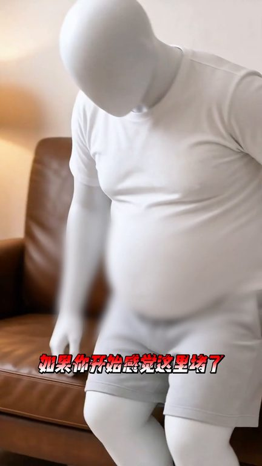
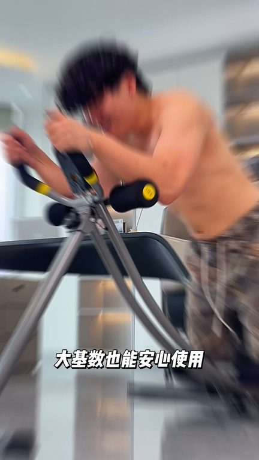
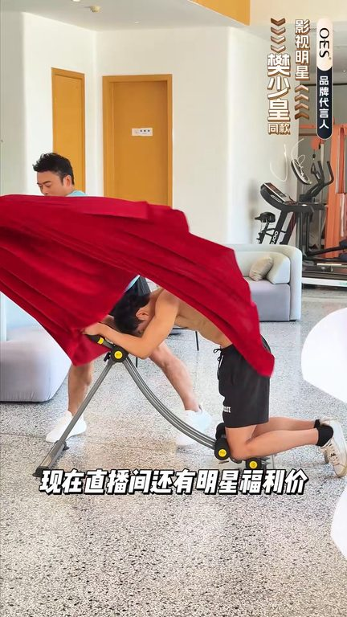

TOP 1 · 代表素材深度拆解
核心放量 稳健
视频为原始素材 HTTPS 链接；点击后加载，建议在网络环境良好时播放。
15.7万素材消耗
1.36%CTR
58.4%类目消耗占比
+0.03pp较类目均值
表现判断
该素材是类目内第 1 名，属于“核心放量”；CTR 高于类目均值。消耗体现承接规模，CTR 体现首屏与定向效率，两项应结合判断，不能仅以单指标下结论。
表达标签
口播三段式证据
开场钩子来我给你寄上不要我热寄上哎呀你反不反啊你你什么意思啊嫌我肚子大要勾人啊揮一下男人要想不嫌老真的很简单
中段论证送给所有30岁以上的男人如果你开始感觉智力堵了身体状态越来越差听我的坚持捲每天就这样捲上两百下一段时间后你会收获不一样的惊喜28天坚持28天你就知道你有多好看普通捲腹肌你就留给十几岁的小伙子去用现在还在用这种直上直下的捲腹肌的你是怕你的腰垮太慢了你要是腹部这样大腿这样手臂这样的你就好好的去用这个OES捲腹肌因为它是专门针对亚洲人身材设计的深湖捲腹肌110度的…
结尾转化不用跑不用挑在家就能享受高端捲腹体验带来的快感每一次滑动都能清晰地感受到腰腹肌群带来的着烧感与酸胀感无论是腰腹大腿手臂还是背部它都能满足你的需求猛蓝身材在家就能练现在直播间还有明星福利价力减400赶紧来看看吧
有效点
- CTR 1.36% 高于类目均值 1.33%，开场或人群指向具备点击优势
- 口播包含明确到手机制或直播间指令，转化路径较完整
迭代动作
- 保留当前高效钩子，复制 3 个变量版本：人物、首句和首帧分别单变量测试
- 视频时长偏长，建议剪出 30–45 秒短版，仅保留钩子、两项证据和一次 CTA
- 促销口径与资质信息保持同屏可验证，结尾只保留一个明确行动指令
合规关注
钩子建立 · 4.3s

场景/问题展开 · 32.4s

卖点证据 · 74.5s

转化收口 · 102.5s
查看完整口播摘要
来我给你寄上不要我热寄上哎呀你反不反啊你你什么意思啊嫌我肚子大要勾人啊揮一下男人要想不嫌老真的很简单就是你每天下班回家后坚持用这个OES捲腹肌屈膝捲腹一段时间这是坚持捲腹第一周的样子这是坚持捲腹两个礼拜的结果这是坚持捲腹一个月的变化我想把这个捲腹肌送给所有30岁以上的男人如果你开始感觉智力堵了身体状态越来越差听我的坚持捲每天就这样捲上两百下一段时间后你会收获不一样的惊喜28天坚持28天你就知道你有多好看普通捲腹肌你就留给十几岁的小伙子去用现在还在用这种直上直下的捲腹肌的你是怕你的腰垮太慢了你要是腹部这样大腿这样手臂这样的你就好好的去用这个OES捲腹肌因为它是专门针对亚洲人身材设计的深湖捲腹肌110度的黄金弧形坡度更符合国人练腹需求人体工学的设计不伤腰不伤脖发力感更加精准机身采用高强度金刚材质大技术也能安心使用100厘米的操场运动行程和折叠受耐设计只需一拉一放一跪一握一推不用跑不用挑在家就能享受高端捲腹体验带来的快感每一次滑动都能清晰地感受到腰腹肌群带来的着烧感与酸胀感无论是腰腹大腿手臂还是背部它都能满足你的需求猛蓝身材在家就能练现在直播间还有明星福利价力减400赶紧来看看吧